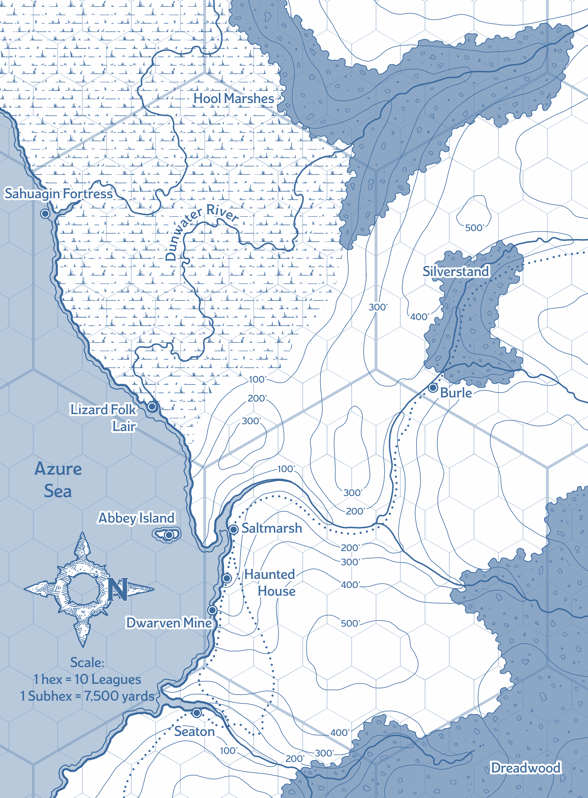

Maps
A.K.A. Keeping track of where you've been
Saltmarsh Map
This is the map of Saltmarsh itself. Map markers have been added for all points of interest that the party discovered.
Saltmarsh Map
The image below is about 2500x3000 pixels in size. Click for full size view.

Locations
- City Gate: These gates stand amid the last section of the old town wall, which is now old, crumbling, and badly worn by centuries of rain and wind off the Azure Sea. At all times, two to three guards stand watch here.
- Barracks and Jail: Built of solid stone on a low hill, this is visibly one of the oldest structures in town. Eliander Fireborn can often be found here if he's not at his office in Hoolwatch Tower.
- The Wicker Goat: This is the oldest tavern in town, and largely caters to the dwarven miners and town guard, though most travelers through town end up here as well.
- Eliander's House: Here, Eliander maintains two things. First, a sanctuary away from the bustle of town, and second the largest library in town by a wide margin. To keep the library maintained he employs Krag, who is also the town's gravedigger, and lives in a spare bedroom here.
- Mining Company Headquarters: A former mansion, purchased by the crown to serve as clan Copperlocks' headquarters in the area.
- Keledek Tower: Home of the physically-impressive Keledek, the resident wizard in Saltmarsh. The locals are superstitious and distrusting of him, often not even wanting to say his name out of fear.
- Faithful Quartermasters of Iuz: Captain Xendros leads a trade delegation, come to Saltmarsh mostly to buy large quantities of fish in the name of Iuz. She buys any spare magic items the party are willing to sell, and also has connections to Faithful Quartermasters across the world, allowing her to sell such items back to the party.
- Empty Net: Partially supported by stilts driven into the harbor waters, this is the town's dive bar, filled with people who are probably pirates, smugglers, etc. Troublemakers are thrown out the back door, over the railing, and into the harbour.
- Green Market: This is the town's daily market, where everything can be bought that isn't available at Winston's. Animals, eggs, bolts of cloth, and other things that are made locally, rather than being brought in for the weekly market.
- Sharkfin Bridge: The connection between the two halves of the town, this bridge is actually older than Saltmarsh. According to the locals, any elf who walks over it feels nauseous for a moment. Oceanus confirms it to be true.
- Kester’s Leather Goods: Run by Kiorna Kester, a woman with a strange obsession about rare and exotic hides from strange and dangerous creatures.
- Hoolwatch Tower: Sixty feet tall, this building serves as both the town's main defensive watchtower, and as the guard's headquarters and armoury. Eliander's main office is here, and he maintains a small bounty board for any low-level adventurers passing through town.
- The Snapping Line: Built from the planks and hulls of half a dozen decommissioned fishing ships, this inn and tavern is frequented by Saltmarsh's fishermen and sailors. The decor is predictably nautical, the rooms are plain but comfortable renditions of a ship’s cabins. The whole place always smells of fish. The owners make 'claw wine', an acquired taste, brewed from lobster meat.
- Council Hall: A large building, made of local stone and hardwood. Above the double doors leading in, there's a wooden sign depicting a net filled with fish. At the top is a small tower with a horn, used to signal the beginning of official council sessions. Each Saturday, the councillors are usually present here in the morning, to hear the many complaints of the townsfolk.
- Weekly Market: Open on Stardays, this market was originally established to sell fish, but has since grown to include a wide variety of goods, with traders bringing items in from throughout Keoland. The center area of the square contains a dozen long tables where shoppers can eat communally. Non-illegal items from the Player’s Handbook costing up to 150 gp are available for purchase here.
- Primewater Mansion: Home to Gellan Primewater, who throws lavish feasts at least once a week, with all sort of interesting foreign foods. Gellan is known to sometimes lean out his upper-floor windows, and shout orders or questions at the captains of his ships as they come in and out of the docks.
- The Dwarven Anvil: Run by an elderly, dark-skinned human woman named Mafera, this establishment uses a Dwarven forge to turn out high-quality goods. Unfortunately, there's always a long backlog of requests for hooks, nails, harpoons, knives, fishing weights, etc. Any metal-based equipment can be ordered here, even expensive things like Plate armour, but there will be a delay.
- The Temple of Moradin: Run by S.A.M., this temple is devoted to all the dwarven gods, but primarily Moradin. There are always a few of the town's dwarves here, either praying, or just looking after the shrines.
- Fishmongers' Plants: This part of town is where the bulk of the fish processing happens. Scaling, filleting, gutting, boning, salting, brining, etc. all happen here. Also, stench-making, but that's just a side effect.
- Oweland House: Home of Eda Oweland, this house has been in her family for generations. The architecture is mis-matched, as each generation has added and expanded as they needed to. An entire section is devoted to housing fishers who worked for Oweland Fisheries but have fallen on hard times, part of why Eda is so well-liked among the town's sailors and fishermen.
- Solmor House: Home of Anders Solmor, this collection of buildings includes the family home, servants' houses, storage, offices, and more.
- The Mariners' Guildhall: Run by Guildmaster Tabeth, the mariners' guild is mostly a place for captains and crews of ships, local or foreign, to have a drink, discuss seafaring, swap stories, and warn each other of the various dangers along the coast. It also helps provide a bunk and a meal for any sailors in need while passing through town, and is a good spot for any captain to stop in search of a crew.
- Ingo the Drover's House: Ingo is a source of mercenaries and mercenary jobs in and around Saltmarsh. Other than his work, he mostly keeps to himself, though he and Eliander seem to get along well, drinking together and swapping stories at the Goat sometimes.
- Carpenters' Guildhall: A marvel of workmanship, the main hall is built without a single nail. The guild are constantly busy building houses and barrels, repairing the docks, etc., all under the direction of the perfectionist guild leader, Jilar Kanklesten.
- Crabber’s Cove: Weathered and abandoned buildings, East of the docks. Thousands of crabs have taken up residence among the ruins in the area. This is where some of the local muscle have set up a semi-regular pit fighting ring.
- The Leap: An outcropping of rock, nearly a hundred feet above the water below. There are several small stone benches to sit and enjoy the view, and a few stone markers in the tall grass nearby. Saltmarshers traditionally jump off the cliffs if a loved one drowns at sea, though the water below is deep and free of rocks, so the jump is rarely harmful, let alone fatal.
- Temple of Procan: Run by Wellgar Brinehanded, this building is the center of worship for most of the local sailors and fishermen. Wellgar is an old sailor himself, who took to religion after losing his leg.
- Saltmarsh Cemetery: The town’s cemetery is well-kept, but many of its graves are little more than memorial stones laid for those who died at sea. The Half-Orc Krag is the town gravedigger, as well as something of a town historian and local loremaster.
- Winston's Store: Touting "solid goods at honest prices", Winston sells any basic PHB gear that you would expect sailors or fishermen to need. Rope, oil, salt, and the like are definitely in stock, but for actual adventuring gear, you'll need to catch the Weekly Market (see 15), and for fresh groceries the Green Market (See 9).
- Sea Grove of Obad-Hai: A gathering place for seagulls, sailors, and folks from the nearby swamps, this grove is tended by the halfling druid Ferrin Kastilar. A former adventurer, he "didn't have the nerve for it", and retired to the grove to worship Obad-Hai. Hunters throughout the county occasionally show up to pray when the hunt goes very well, or very poorly.
- Standing Stones: Two large carved stones stand on this island, serving no apparent purpose. Every local you talk to offers a different superstition about the stones. There's definitely some ancient magic here, but it's long dormant.
Regional Map
This is a map of the southern coast of Keoland. As with the Saltmarsh map, markers will be added as the party discover things.
For an idea of scale, click here for a map of the Annapolis Valley, with an area highlighted that is about the same as what's depicted on this map.
Regional Map So Far
The image below is about 4200x5700 pixels in size. Click for full size view.

World Map
In case it comes up, there's a good map of the whole Greyhawk known world, the Flanaess region, here.
This world map is roughly current-enough to when Ghosts of Saltmarsh happens.
This map's hexes are 10 leagues, the same size as the large hexes of the Regional Map above.
Saltmarsh is in the area between the Dreadwood and the Hool Marshes, 1/3 from the left and 1/5 up from the bottom.
{kind=link}
{kind=link}
{kind=link}